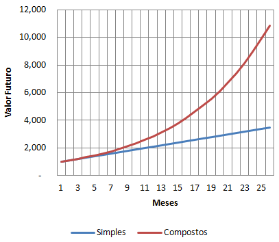

Diferente dos juros simples, o juros composto é uma capitalização de uma taxa de juros que age sobre o capital inicial somado com o rendimento, durante o período já passado. Ou seja, em um capital de R$1.000,00 durante 5 meses, com uma taxa de juros que 4% ao mês, no primeiro mês irá render R$40,00 em cima dos R$1.000,00. No segundo mês irá render um valor de R$41,60 ainda em cima dos R%1.040,00 considerando o que rendeu no último mês.
A Fórmula para calcular o juros composto é: 𝑴 = 𝑪(𝟏 + 𝒊)𝒏.
Onde 𝑴 - é o montante, que é o rendimento mais o capital, 𝑪 - é o capital inicial, 𝒊 - é a taxa de rendimento e 𝒏 - é o tempo que ficou aplicado.
Devemos lembrar que o 𝑴 é o que rendeu mais o capital, se você quiser descobrir apenas o que rendeu, você deve subtrair do montante o capital inicial. 𝑱 = 𝑴 - 𝑪.
Muitas vezes também a taxa de juros e o prazo vêm com unidades de tempo diferente, quando isso ocorreu devemos converter a taxa ou o prazo para a mesma unidade de tempo. Se a taxa de juros é de 10% ao mês, e o prazo é de 1 ano, devemos converter o prazo em anos para mês. Ou seja, ao invés de 1 ano, devemos pensar como 12 meses. NO JUROS COMPOSTO, DEVEMOS CONVERTER APENAS O PRAZO, A TAXA NÃO DEVE SER CONVERTIDA.
O gráfico do juros composto segue o mesmo modelo de uma função exponencial. O gráfico abaixo mostra a diferença entre uma aplicação em juros simples e em juros compostos.
Voltar